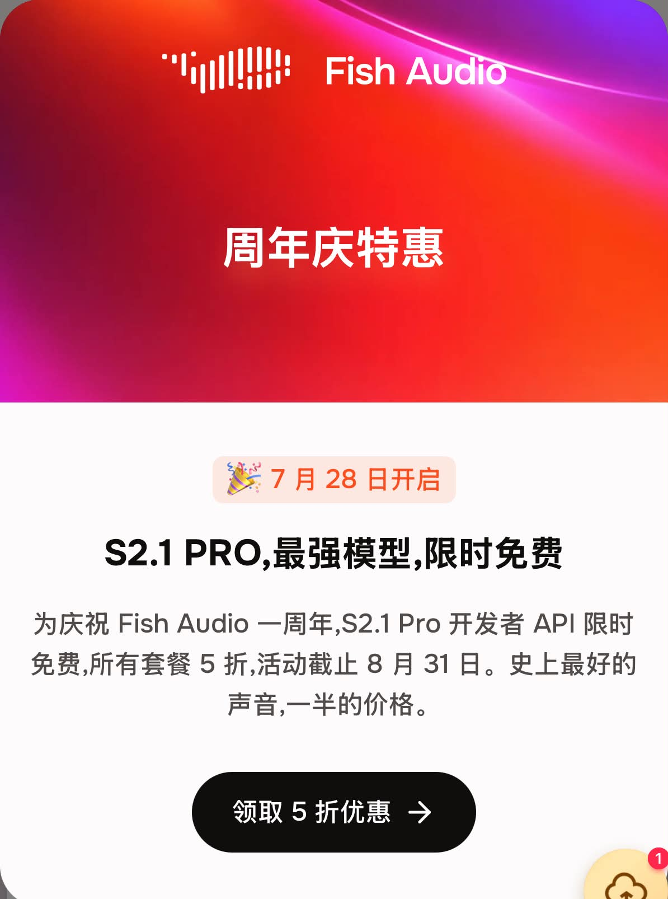
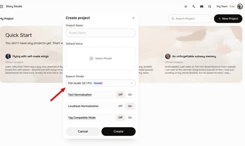

Fish Audio S2.1 Pro｜低延遲多語 TTS、免費開發 API 與即時語音 Agent 路線

一句話摘要
戴戴相传AI 分享 Fish Audio S2.1 Pro：它不是只面向旁白配音的 TTS，而是把低延遲、多語、聲音克隆、語氣控制與 API 串到一起，往即時語音 Agent、客服、數位分身與口播生成走。
原文：
https://www.threads.com/@daizicheng8/post/DbYLQvFk8KI
Threads 貼文重點
貼文主張：
- Fish Audio 發布旗艦語音模型 S2.1 Pro。
- 首幀音訊延遲低至 90ms，適合即時對話。
- 支援 83 種語言。
- 可用自然語言控制耳語、輕笑等細膩情緒。
- 10–30 秒音訊即可做高品質音色克隆。
- 原生支援多人對話生成。
- API 已上線，且有免費測試額度。
可見互動：貼文頁顯示約 243 次瀏覽、2 likes、1 repost/分享；相關串文中也有多則台灣/華語 AI 帳號轉貼 Fish Audio S2.1 Pro 免費 API 訊息。
圖片 OCR / 視覺摘要

圖片顯示 Fish Audio 週年慶宣傳與 Story Studio UI：
- 「7 月 28 日开启」
- 「S2.1 PRO，最强模型，限时免费」
- 「S2.1 Pro 开发者 API 限时免费，所有套餐 5 折，活动截止 8 月 31 日」
- Story Studio 建立專案視窗可選 Speech Model：Fish Audio S2.1 Pro。
官方查核
Fish Audio 官方 blog《Fish Audio S2.1 Pro: Free Text-to-Speech API for Developers》與 docs 可確認：
- `s2.1-pro` 是官方推薦 production model。
- `s2.1-pro-free` 是同模型的 $0 development/testing 版本。
- `s2.1-pro-free` 可用同一 TTS API endpoint，模型品質與語言覆蓋與 `s2.1-pro` 相同。
- 官方文字標示為 free under Fair Use，不代表無條件、永久、無限制商用。
- free 版本沒有 TTFA / DPA guarantees，適合 testing、prototyping、development 與 smaller businesses。
- S2.1 Pro 支援 83 languages，並有 natural-language control，例如用 `[whispers sweetly]`、`[laughing nervously]` 這類描述控制語氣。
- 官方 blog 同時提到約 70ms single-request TTFA、標準 API 約 90ms TTFA；數字應依使用情境、地區、併發與方案而異。
- Developers 頁面提供 curl、Python SDK、TypeScript SDK 與 API key 流程。
為什麼值得關注？
Fish Audio S2.1 Pro 的重點不是「又一個配音網站」，而是 voice agent stack 的一部分：
| 層級 | 能力 | 可能用途 |
|---|---|---|
| TTS | 文字轉自然語音 | 課程旁白、短影音口播、客服回覆 |
| 低延遲串流 | 約 70–90ms TTFA 等級主張 | 即時語音助手、電話客服、角色對話 |
| 聲音克隆 | 10–30 秒音訊建立聲線 | 品牌聲音、講師口吻、角色聲音 |
| 多語 | 83 languages | 多語課程、跨市場內容、翻譯配音 |
| 語氣控制 | whisper/laugh 等自然語言標籤 | 戲劇化旁白、情緒口播、角色扮演 |
| API / SDK | 開發者接入 | Hermes voice、LINE/Telegram 語音回覆、課程工具 demo |
實務提醒
- 免費 API 應視為開發/測試與促銷入口，不能當作永久成本假設。
- 聲音克隆牽涉肖像權、聲音權、授權與詐騙風險；必須取得同意並標示合成。
- 低延遲數字需實測：網路、區域、streaming 設定、字數與併發都會影響體感。
- 若用於課程或公眾內容，應保留原稿、聲音授權與生成紀錄，避免日後權利爭議。
- 對 LINE / Telegram voice agent 而言，Fish Audio 適合評估「高品質雲端聲音」，但也要與 Edge TTS、本機 TTS、OpenAI TTS、MiniMax 等方案比較成本。
對 AI 學習雷達的結論
Fish Audio S2.1 Pro 是「AI 語音從念稿到即時互動」的重要案例。對欒帥的課程與 Hermes 工作流，它可放在三個模組：
- AI 語音助理：Agent 回覆文字後自動產生自然語音。
- 課程內容再製：講義/文章 → 口播稿 → TTS → 短影音/Podcast 草稿。
- 品牌聲音治理：如何取得授權、標示 AI 合成、設定品質與成本上限。